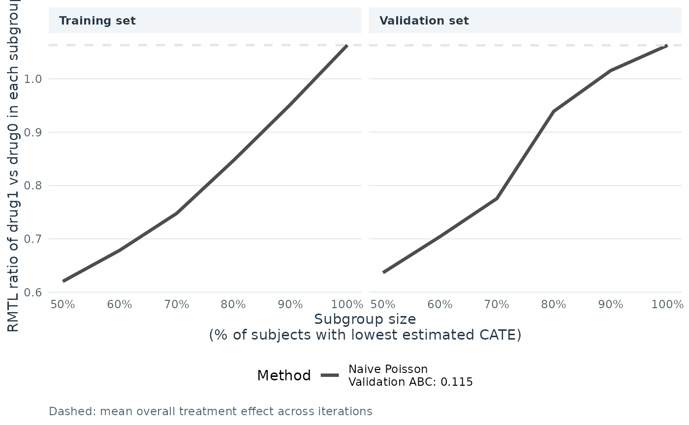
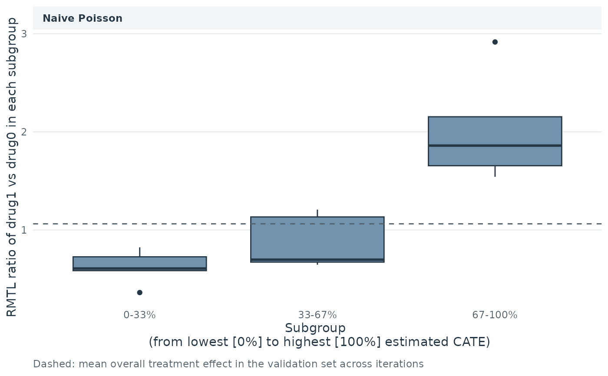
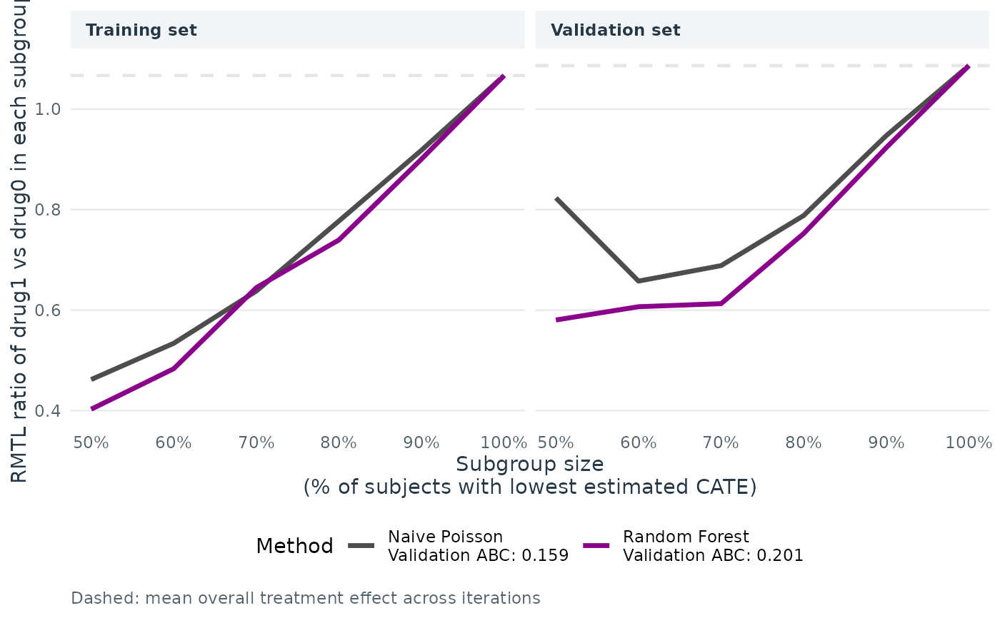
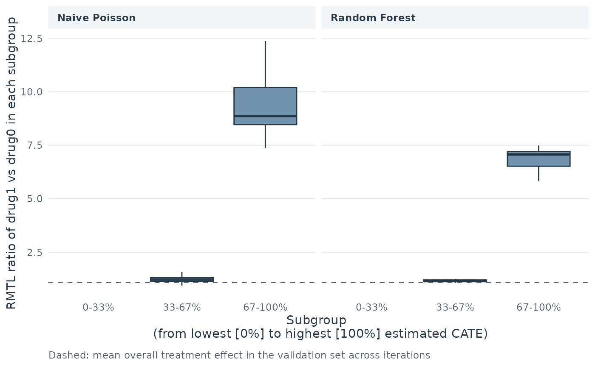

Cross-validation of the conditional average treatment effect (CATE) score
Source:R/crossv.R
catecv.RdProvides doubly robust estimation of average treatment effects for binary, count, and survival outcomes in nested and mutually exclusive subgroups of patients defined by an estimated conditional average treatment effect (CATE) score via cross-validation (CV).
Usage
catecv(
response,
data,
outcome_model,
outcome_method = NULL,
benefit_model = NULL,
benefit_method = "t_learner",
ps_model,
ps_method = "glm",
censoring_model = NULL,
censoring_method = "breslow",
minPS = 0.01,
maxPS = 0.99,
followup.time = NULL,
tau0 = NULL,
higher.y = TRUE,
prop.cutoff = seq(0.5, 1, length = 6),
prop.multi = c(0, 1/3, 2/3, 1),
abc = TRUE,
train.prop = 3/4,
cv.n = 10,
error.max = 0.1,
max.iter = 5000,
surv.min = 0.025,
xvar.smooth.score = NULL,
xvar.smooth.init = NULL,
tree.depth = 2,
n.trees.rf = 1000,
n.trees.boosting = 200,
B = 3,
Kfold = 5,
error.maxNR = 0.001,
max.iterNR = 150,
tune = c(0.5, 2),
seed = NULL,
plot.gbmperf = FALSE,
verbose = 0,
contrast.control = list(),
rmst.control = list(),
ps.control = list(),
rf.control = list(),
...,
xvar.smooth = NULL
)Arguments
- response
A string describing the type of outcome in the data. Allowed values include "binary", "count" (see
catecvcount()), "survival" (seecatecvsurv()). Continuous outcomes are not implemented.- data
A data frame containing the variables in the outcome, treatment, and censoring models (if specified); a data frame with
nrows (1 row per observation).- outcome_model
A formula specifying the outcome and baseline covariates. Use a
Survresponse for survival and include an exposure offset for count outcomes.- outcome_method
Outcome-model method for each
benefit_method. The default for a T-learner is'logistic'for binary,'poisson'for count, and'coxph'for survival outcomes. Supply the method for each doubly robust score explicitly.- benefit_model
Optional one-sided formula for the covariates and terms used in two-regression and contrast-regression scores. The default uses the terms in
outcome_model. T-learners useoutcome_modeldirectly.- benefit_method
Score-construction method, with one entry per
outcome_method. The default is't_learner'. Seecatefitfor supported combinations.- ps_model
A formula for the treatment model, with treatment on the left. It estimates propensity scores. For a common randomization probability, use an intercept-only formula such as
trt ~ 1.- ps_method
Treatment-model fitting method. The default
'glm'uses logistic regression.'lasso'uses a logistic model with LASSO screening for two-way interactions.- censoring_model
Survival only. A one-sided formula for the model that estimates probabilities of remaining uncensored for inverse probability of censoring weighting (IPCW). The default uses the outcome-model covariates and treatment.
- censoring_method
Survival only.
'breslow'(default) uses Cox regression with the Breslow estimator. Accelerated failure time options are'aft (exponential)','aft (weibull)','aft (lognormal)', and'aft (loglogistic)'.- minPS
A numerical value (in `[0, 1]`) below which estimated propensity scores should be truncated. Default is
0.01.- maxPS
A numerical value (in `(0, 1]`) above which estimated propensity scores should be truncated. Must be strictly greater than
minPS. Default is0.99.- followup.time
A column name in
dataspecifying the maximum follow-up time, interpreted as the potential censoring time. Only applies for survival outcomes. Default isNULL, which corresponds to unknown potential censoring time.- tau0
The truncation time for defining restricted mean time lost. Only applies for survival outcomes. Default is
NULL, which corresponds to setting the truncation time as the maximum survival time in the data.- higher.y
A logical value indicating whether higher (
TRUE) or lower (FALSE) values of the outcome are more desirable. Default isTRUE.- prop.cutoff
A vector of numerical values (in `(0, 1]`) specifying percentiles of the estimated CATE scores to define nested subgroups. Each element represents the cutoff to separate observations in nested subgroups (below vs above cutoff). The length of
prop.cutoffis the number of nested subgroups. An equally-spaced sequence of proportions ending with 1 is recommended. Default isseq(0.5, 1, length = 6).- prop.multi
A vector of numerical values (in `[0, 1]`) specifying percentiles of the estimated CATE scores to define mutually exclusive subgroups. It should start with 0, end with 1, and be of
length(prop.multi) > 2. Each element represents the cutoff to separate the observations intolength(prop.multi) - 1mutually exclusive subgroups. Default isc(0, 1/3, 2/3, 1).- abc
A logical value indicating whether the area between curves (ABC) should be calculated at each cross-validation iterations, for each scoring method. Default is
TRUE. Binary ABC requires at least two distinctprop.cutoffvalues.- train.prop
A numerical value (in `(0, 1)`) indicating the proportion of total data used for training. Default is
3/4.- cv.n
A positive integer value indicating the number of cross-validation iterations. Default is
10.- error.max
A numerical value > 0 indicating the tolerance (maximum value of error) for the largest standardized absolute difference in the covariate distributions or in the doubly robust estimated rate ratios between the training and validation sets. This is used to define a balanced training-validation splitting. Default is
0.1. Not available for binary outcomes, which use treatment-stratified random splits.- max.iter
A positive integer value indicating the maximum number of iterations when searching for a balanced training-validation split. Default is
5,000. Not available for binary outcomes.- surv.min
Lower bound for the estimated probability of remaining uncensored. Defaults to 0.025.
- xvar.smooth.score
Reserved for continuous-outcome scores.
- xvar.smooth.init
Names of outcome-model variables to smooth for count GAMs. Equivalent to
xvar.smoothfor count outcomes.- tree.depth
Maximum depth of boosting trees. Defaults to 2.
- n.trees.rf
Number of trees for survival random forests. Defaults to 1000.
- n.trees.boosting
Maximum number of trees for boosting. Defaults to 200.
- B
Number of cross-fitting repetitions used by two-regression and contrast regression. Defaults to 3.
- Kfold
Number of folds used for cross-fitting within each training set. Defaults to 5.
- error.maxNR
Newton–Raphson convergence tolerance for contrast regression. Defaults to 0.001.
- max.iterNR
Maximum number of Newton–Raphson iterations for contrast regression. Defaults to 150.
- tune
Two positive Newton–Raphson tuning values for contrast regression. Defaults to
c(0.5, 2).- seed
An optional integer specifying an initial randomization seed for reproducibility. Default is
NULL, corresponding to no seed.- plot.gbmperf
Whether to plot boosting performance. Defaults to FALSE.
- verbose
An integer value indicating what kind of intermediate progress messages should be printed.
0means no outputs.1means only progress bar and run time.2means progress bar, run time, and all errors and warnings. Default is0.- contrast.control
A named list of options for count or survival contrast regression. Supported names are
solver("C", the default, or"R"),error.maxNR,max.iterNR,tune, andoptim.control(a named list passed tostats::optimon fallback). List entries override the corresponding top-level NR arguments. Options are kept separate from..., which is forwarded to boosting. Count and survival outcomes support this list; continuous outcomes retain their existing solver.- rmst.control
Named options for Cox restricted mean survival integration. Supported entry:
solver = "C"(default) orsolver = "R". The C backend accumulates each patient's integral without allocating a patient-by-event-time matrix. Cox model fitting is unchanged. Available only for survival outcomes; independent ofcontrast.control.- ps.control
Named options for LASSO propensity-score interaction screening. Supported entry:
solver = "C"(default) orsolver = "R". Only affects screening whenps_method = "lasso"; the LASSO fit and interaction selection rule are unchanged. Kept separate from boosting's...and other numerical controls.- rf.control
Named list of randomForestSRC options:
mtry,nodesize,nsplit,nodedepth, andsplitrule. Applies to both treatment arms and survival initial-predictor forests. Usen.trees.rffor the number of trees.- ...
Additional arguments. Deprecated argument names from precmed 1.1.0 remain supported for backward compatibility and emit warnings.
- xvar.smooth
Names of variables used as smooth terms for count GAM outcome models. By default, all eligible outcome-model variables are used.
Value
For binary response, a "precmed" object with one ate.*
list per method, containing matrices of training and validation risk differences
for nested high and low subgroups and mutually exclusive groups, with one column
per iteration, and abc.valid when requested. It also contains overall
training and validation effects, props, splits (row indices),
subgroup.support, and messages accessible with diagnostics().
For count response, see description of outputs in catecvcount().
For survival response, see description of outputs in catecvsurv().
Details
Each iteration fits scores on the training split using the same
score-fitting routines as catefit. The fitted score is applied
to the held-out split before its subgroup effects are estimated.
For binary outcomes, each iteration randomly splits each treatment
arm into training and validation sets. The score is fitted on training data
only and applied to both sets. Percentile cutoffs are calculated separately
in each set using its scores, without using validation outcomes. Ties may make
nested groups larger than their nominal proportions. Mutually exclusive
groups use half-open intervals, with the last interval including its upper
endpoint; tied cutoffs can produce empty groups. Subgroup risk differences
are estimated separately in each set using an augmented inverse-propensity
estimator. Score-fitting or subgroup failures return NA with a warning and
recorded diagnostics; ABC is NA if any required estimate is unavailable.
ABC integrates the validation risk-difference curve minus the overall
validation effect, reversing the sign when lower outcomes are desirable.
These subgroup comparisons assess ranking, not calibration; causal
interpretation requires exchangeability, positivity, consistency, and
appropriate nuisance-model assumptions. error.max and max.iter
are not supported for binary splits. The binary score methods are described
in catefit().
For count response, see details in catecvcount().
For survival response, see details in catecvsurv().
References
Yadlowsky, S., Pellegrini, F., Lionetto, F., Braune, S., & Tian, L. (2020). Estimation and validation of ratio-based conditional average treatment effects using observational data. Journal of the American Statistical Association, 1-18. DOI: 10.1080/01621459.2020.1772080.
Thao, L. T. P., Efthimiou, O., Varga, T. V., Hoogland, J., & Debray, T. P. A. (2026). Validation of prediction models for patient outcomes and individualized treatment effect. In T. P. A. Debray, T.-L. Nguyen, & R. W. Platt (Eds.), Comparative Effectiveness and Personalized Medicine Research Using Real-World Data (Chapter 19, pp. 485–512). Chapman & Hall/CRC. doi:10.1201/9781003300809-19
Jiang, X., Simoneau, G., Pellegrini, F., Shen, C., de Moor, C., & Tian, L. (2026). Visualization and interpretation of individualized treatment rule results. In T. P. A. Debray, T.-L. Nguyen, & R. W. Platt (Eds.), Comparative Effectiveness and Personalized Medicine Research Using Real-World Data (Chapter 20, pp. 513–536). Chapman & Hall/CRC. doi:10.1201/9781003300809-20
Examples
# \donttest{
cate_1 <- catecv(response = "count",
data = countExample,
outcome_method = "poisson",
outcome_model = y ~ age + female + previous_treatment +
previous_cost + previous_number_relapses +
offset(log(years)),
ps_model = trt ~ age + previous_treatment,
higher.y = FALSE, cv.n = 5, seed = 999, verbose = 1)
#> Variable trt was recoded to 0/1 with drug0->0 and drug1->1.
#>
|
| | 0%
#> cv = 1
#> splitting the data..
#> training..
#> validating..
#>
#> cv = 2
#> splitting the data..
#> training..
#> validating..
#>
#> cv = 3
#> splitting the data..
#> training..
#> validating..
#>
#> cv = 4
#> splitting the data..
#> training..
#> validating..
#>
#> cv = 5
#> splitting the data..
#> training..
#> validating..
#>
#> Total runtime : 8.64 secs
plot(cate_1, ylab = "RMTL ratio of drug1 vs drug0 in each subgroup")

boxplot(cate_1, ylab = "RMTL ratio of drug1 vs drug0 in each subgroup")

abc(cate_1)
#> cv1 cv2 cv3 cv4 cv5
#> poisson 0.1375899 0.1172791 0.1120313 0.06136285 0.1877103
# Survival outcome
library(survival)
tau0 <- with(survivalExample,
min(quantile(y[trt == "drug1"], 0.95), quantile(y[trt == "drug0"], 0.95)))
cate_2 <- catecv(response = "survival",
data = survivalExample,
outcome_method = c("poisson", "random_forest"),
benefit_method = rep("t_learner", 2),
outcome_model = Surv(y, d) ~ age + female + previous_cost +
previous_number_relapses,
ps_model = trt ~ age + previous_treatment,
censoring_model = ~ age + previous_cost + previous_treatment,
tau0 = tau0,
higher.y = TRUE,
surv.min = 0.025,
cv.n = 5,
seed = 999)
#> Variable trt was recoded to 0/1 with drug0->0 and drug1->1.
plot(cate_2, ylab = "RMTL ratio of drug1 vs drug0 in each subgroup")

boxplot(cate_2, ylab = "RMTL ratio of drug1 vs drug0 in each subgroup")
#> Warning: Removed 10 rows containing non-finite outside the scale range
#> (`stat_boxplot()`).

abc(cate_2)
#> cv1 cv2 cv3 cv4 cv5
#> poisson 0.2165482 0.2183456 0.1012403 0.2153617 0.09806659
#> randomForest 0.2252653 0.2063741 0.1461175 0.2431729 0.15440263
# }